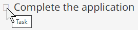

CSS-generated text and icons
Designing with CSS-generated content
CSS can generate text and icons through the ::before and ::after pseudo-classes. However, WCAG 2.1 fails any use of non-decorative CSS-generated content, since it can be overwritten by user style sheets (used by users with low vision), it lacks a role, and it's invisible to browser find functionality, among other reasons mentioned in this defense of WCAG Failure F87. That said, there is a use case for supplemental, CSS-generated text and a mostly-accessible technique for informative icons.
Follow these best practices with CSS-generated content:
- Hide decorative CSS-generated content from screen readers with the
aria-hidden="true"attribute. - Don't use CSS-generated text.
- Exception: Use CSS-generated text to expose
mark,del,ins, andselements to screen reader users.
- Exception: Use CSS-generated text to expose
- For informative CSS-generated icons:
- Set the icon on a
<span>element, and:- Hide it from screen reader users with the
aria-hiddenattribute. - Add a visible label for mouse users with the
titleattribute.
- Hide it from screen reader users with the
- Add a label for screen-reader users in a second
<span>element, visually-hidden with the WET CSS class.wb-inv.
This approach differs from the WET Style Guide's Icons pattern by adding the
titleandaria-hiddenattributes. It doesn't address the needs of low vision keyboard users.WCAG 2.1 also offers an informative CSS icon technique, ARIA24: Semantically identifying a font icon with role="img", but it requires a specific style declaration in the user's stylesheet, intended to protect the icon font family declaration from being overwritten. Though not mentioned in WCAG 2.1, using ARIA24 entails promoting its existence to your users with low vision. Also, the defense of WCAG Failure F87 suggests that ARIA24's solution lacks necessary semantics.
There is no ideal technique for CSS-generated icon fonts.
- Set the icon on a
Good example: CSS-generated boundary declarations for elements not exposed to screen readers
The roles of the <mark> element and the editorial elements <del>, <ins> and <s> are not declared by screen readers. To alert screen reader users to their presence, visually-hidden CSS-generated text flags the start and end of each.
CSS
Code begins
mark::before { content: " [highlight start] "; }
mark::after { content: " [highlight end] "; }
del::before { content: " [deletion start] "; }
del::after { content: " [deletion end] "; }
ins::before { content: " [insertion start] "; }
ins::after { content: " [insertion end] "; }
s::before { content: " [start of stricken text] "; }
s::after { content: " [end stricken text] "; }
/* visually hide the generated content */
mark::before, mark::after,
del::before, del::after,
ins::before, ins::after,
s::before, s::after {
clip-path: inset(100%);
clip: rect(1px, 1px, 1px, 1px);
height: 1px;
width: 1px;
overflow: hidden;
position: absolute;
white-space: nowrap;
}Code ends
Source: Adrian Roselli's blog post F87: CSS Generated Content and WCAG Conformance. February 24, 2019.
Good example: Informative CSS icon
In this example, the Font Awesome hammer icon is used to represent a task.
- The
<span>element with classes.fasand.fa-hammerdisplays the icon via a CSS::beforepseudo-class. - Its
titleattribute holds a tooltip for mouse users, "Task". - Its
aria-hidden="true"attribute hides the element from screen readers, since their support for thetitleattribute is inconsistent. - Directly following the icon is a visually-hidden
<span>element holding the name “Task”, which declares in all screen readers.
Example begins
Task Complete the application
Example ends
If their custom style sheets overwrite the icon's font-family declaration, mouse users with low vision can access the icon name by hovering over the placeholder square, triggering the title attribute's tooltip.

HTML
Code begins
<p>
<span class="fas fa-hammer" title="Task" aria-hidden="true"></span>
<span class="wb-inv">Task</span>
Complete the application
</p>
Code ends
CSS
Code begins
.fa-hammer:before { content: "\f6e3"; }
.fas { font-family: "Font Awesome 5 Free"; }
.wb-inv {
clip: rect(1px,1px,1px,1px);
height: 1px;
margin: 0;
overflow: hidden;
position: absolute;
width: 1px;
}
Code ends
Related WCAG resources
Related WCAG resources
Success criteria
Techniques
- G94: Providing short text alternative for non-text content that serves the same purpose and presents the same information as the non-text content
- ARIA6: Using aria-label to provide labels for objects
- ARIA24: Semantically identifying a font icon with role="img"